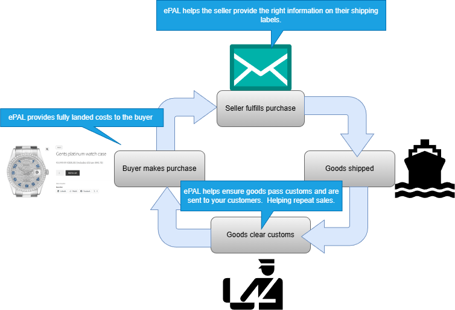
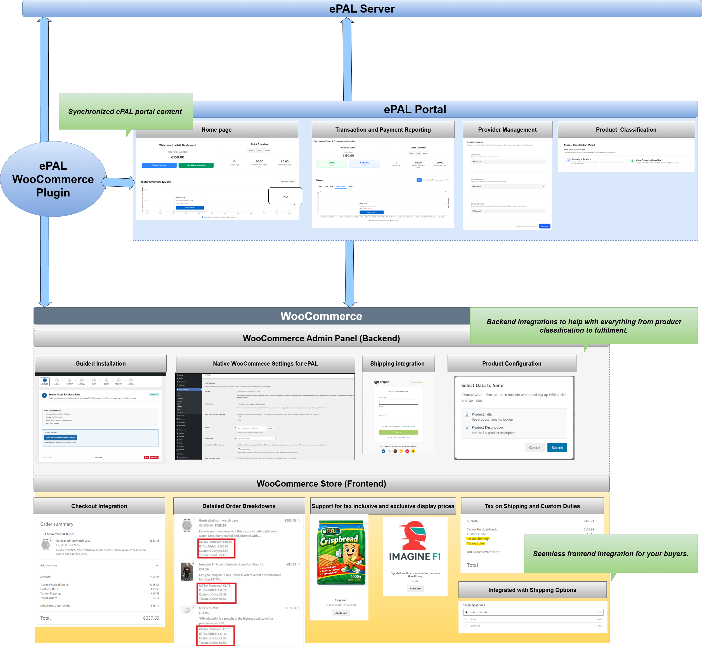

Getting Started with the ePAL WooCommerce Plugin
Read about how to install the ePAL plugin for WooCommerce.
If you would like a walk through installation, contact us at LINK.
The following graphic shows how ePAL helps create a positive cycle for international sales that benefits you and your customers. ePAL is there to provide information at each step, from providing tax and customs information to your buyer before, during and after their purchase, to ensuring required information is on your shipping labels when they are reviewed by customs.

For more information about the benefits of ePAL, see LINK.
Component Overview
The following graphic shows the main components in a typical deployment of this plugin as well as some features:

- ePAL Server: This is the backend engine that handles calculations and other processes.
- ePAL Portal: ePAL also provides a portal where you can register your profile, view reports and change some settings. The content here and within the plugin can be synchronized so that it remains aligned.
- ePAL Plugin: The plugin integrates the ePAL's functions with WooCommerce.
- WooCommerce: The WooCommerce integration can be split into the back-
and frontend integrations:
- Admin Panel (Backend): The plugin is integrated into your WooCommerce Admin panel so you can manage all your ePAL relevant settings from there. It also integrates with native WooCommerce functionality for things like product classification and order fulfilment.
- Store (Frontend): ePAL's features like tax and customs calculations are also available to the buyers in your store.
Features
- Guided Installation: Run the installer and complete all your integration without ever leaving your WooCommerce Admin panel.
- Indirect Tax Calculation: Automated calculation of indirect tax such as VAT inlcuding non-standard cases like reduced and zero rated goods. Coverage for B2B
- Customs and Excise: Real-time calculation of customs duty and excise detection.
- Product Configuration: Tools to classify your products to ensure more precise tax results, reducing overpayments.
- Compliance: Reporting and audit logs available.
- Shipping Provider Integration: Integration with your shipping partner to ensure correct labels and labelling, as well as other documentation.
- Checkout Integration
- Tax on shipping and customs
- Provider Management: Choose between the supported providers
- Product Classification: Perform a variety of tasks related to product classification.
Restrictions
- ePAL does not support digital goods.
- The plugin is supported for sellers into the European Union (EU). This means sellers like you can be based anywhere in the world and can sell to any EU country.
- Whether a transactions is Business-to-Business (B2B) or Business-to-Customer (B2C), domestic or cross-border can all affect the applicable tax rate (in addition to other factors) and any customs duty. For more detailed information about what is supported, see Supported Taxes and Customs Duties.
Installation
You can find all the information that you need to install the plugin in the Installation Guide section.
First you need to retrieve and upload the plugin into your WooCommerce instance. This is explained in the Uploading the ePAL Plugin topic.
Once this is complete, you can install it. This is explained in the Installing the ePAL Plugin topic.